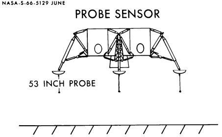

Lunar module activities also focused on configuration control, schedules, and funds in 1965. J. Thomas Markley, program control chief, directed the Apollo engineers to be more conservative in their proposals to the Configuration Control Panels. Changes in the spacecraft must correct design flaws, not improve hardware. But stemming the flow of changes in the lunar module was not an easy matter; many were required because of its mission.12

Probe sensor on lunar module landing gear, to alert astronauts that touchdown on the lunar surface was imminent.
An example was the installation of frangible probes on the base of each foot pad to tell the crew the lander was a meter and a half above the surface and to switch off the descent motor. If the motor were still firing when the craft touched down, the engine nozzle would be damaged, landing stability might be affected, and the ascent stage might be impaired by debris kicked up by the engine exhaust.13
One configuration issue, a carry-over from 1963-1964, remained unresolved throughout 1965 - whether to substitute an optical tracking system for the complex, heavy, and expensive rendezvous radar. In February 1965, the Configuration Control Board deleted the radar from the command module and added flashing lights to the lander. If the lone crewman in the command ship had to perform the rendezvous, he would use onboard optics, a ranging capability, and the VHF communications link between the spacecraft, which would also act as backups if the lander's radar failed.14
In mid-March, Cline W. Frasier of the Guidance and Control Division suggested replacing the rendezvous radar in the lander with an optical system, as well. Consisting of a star tracker in the lunar module, a xenon strobe light on the command module, and a hand-held sextant for the lander's pilot, the substitute would offer two advantages: a weight reduction of 40 kilograms and a cost saving of 30 million.15
The Apollo office, hesitant to take such a step, decided to pursue parallel development. In mid-April, Grumman was instructed to design the lander to accept either system and to slow down RCA's radar development program. Radar-tracker studies at the Manned Spacecraft Center would be completed by September, and a contractor would be selected to design the tracker. William A. Lee in Shea's office protested holding back RCA; the delay would force the deletion of the radar from the first and second landers, to be used on earth-orbital missions. This, said Lee, would be a violation of the all-up concept of flying only complete spacecraft. Changes in the radar program would be justified, he concluded, solely
by the implicit assumption that we will cancel the program eventually. The logic of this is very questionable, since it clearly says that the money being spent on this program is being wasted deliberately. We should either pursue the radar in a manner which would permit its use on the LEM, or we should cancel it. I can find no middle ground. . . . The small number of earth-orbital LEM flights can be justified only if we adhere rigorously to the ground rules of all-up flights and qualification prior to flight. It is too early in the LEM program to consider compromising these requirements, and to do so for budgetary reasons will almost certainly prove to be false economy.16
In August, Houston amended its contract with AC Electronics to include the optical tracker as government-furnished equipment. Grumman grumbled but kept the spacecraft design flexible. Two months later, MSC's Assistant Director for Flight Crew Operations Donald Slayton objected to the tracker because of its limitations in determining range and range-rate (approaching and departing speeds) data and the lack of experience in using the instruments. If an immediate choice had to be made, Slayton said, choose the radar. At the end of the year, Mueller, Shea, and Robert C. Duncan set up what they called a "rendezvous sensor olympics" to be completed in the spring of 1966. If either system lagged, the decision would be obvious; if both were successful, Duncan's division would recommend a choice; if both failed, there would be a lot of work ahead.17
The optical tracker's lighter weight was attractive, since weight was an important factor in 1965. The lander had gained even more weight during the early months of the year than the command and service modules. In May, Shea persuaded Mueller to approve an increase in lander weight to 14,850 kilograms, including crew and equipment. In June, Harry L. Reynolds warned Owen Maynard that it would be difficult to keep the spacecraft below even that figure. All that summer, the warnings continued. Caldwell Johnson wrote Shea in August that the lander might get too heavy to do its job. The next month Shea asked Houston management for help in solving the problem. He also formed a Weight Control Board (headed by himself to act on reduction proposals.18
Really worried now, Grumman launched a two-pronged attack known as "Scrape" and "SWIP." Scrape meant just what the word implies, searching the structure for every chance to shave bulk off structural members. But SWIP Super Weight Improvement Program was Grumman's real war against weight.
Grumman project engineer Thomas J. Kelly led a SWIP team of a dozen experts in structures, mass property, thermodynamics, and electronics, whose task was to second-guess the whole design. This same team had recently and successfully shaved weight off the F-111B aircraft, and it knew what a tough job it was up against. When the SWIP campaign started, the engineering design was 95 percent complete. So designers pored over already approved drawings, looking for ways to lighten the craft. Grumman also pressured Houston officials to keep all government-furnished equipment for the lander within the specified weights. And Bethpage scrutinized parts supplied by its subcontractors and insisted that these weights be reduced wherever possible. Weekly reports and monthly meetings between Bethpage and Houston turned into forums for airing suggestions for further reductions and discussions of what had been done. The first such review, held at Grumman on 3 September, revealed that 45 kilograms had already been whittled from the structure by Scrape. The more extensive SWIP plan was outlined - what had been started, what was planned, and what would be expected by way of evaluation and cooperation from Houston's Apollo subsystem managers.19
By the end of 1965, Scrape and SWIP had pruned away 1,100 kilograms, providing a comfortable margin below the control weight limit. One of the more striking changes to come from this drive for a lighter spacecraft was the substitution of aluminum-mylar foil thermal blankets for rigid heatshields. The gold wrapping characteristic of the lander's exterior saved 50 kilograms.20
Many of these weight-reducing changes made the lander so difficult to fabricate, so fragile and vulnerable to damage, that it demanded great care and skill by assembly and checkout technicians. Structural components took on strange and complex shapes, requiring careful machining to remove any excess metal - a costly and time-consuming process even after vendors had been found who would make these odd looking parts.*21
* Arnold Whitaker described how the fabrication group was caught in the squeeze between manufacturing requirements and schedule pressures. At a program management meeting he said that "one of the fellows in manufacturing came in [with] a light cardboard box. . . . He said, 'I'll show you why everything's late.' And he dumped out a whole box of machined parts . . . , very complex fittings [too thin to be even] reasonably heavy sheet metal - but it wasn't any sheet metal, it was a complex machined fitting. And he said 'Man, we never built parts like this before in any quantity like this and every fitting on the LEM looks like this.' "
12. Markley memo, "CCB/CCP Actions," 23 June 1965.
13. Richard Reid, "Simulation and Evaluation of Landing Gear Probe for Sensing Engine Cutoff Altitude During Landing," Internal Note MSC-IN-65-EG-10, 15 March 1965; MSC Quarterly Activity Report for Assoc. Admin., OMSF, NASA, for period ending 30 April 1965, pp. 67-68; Grumman Reports no. 30, LPR-10-46, 10 Aug., p. 18, and no. 33, LPR-10-49, 10 Nov. 1965, p. 15.
14. Maynard to Chief, Instrumentation and Electronics Div. (IESD), "Requirement for VHF ranging capability' between CSM and LEM," 15 Feb. 1965; Shea to NASA Hq., Attn.: Dep. Dir., Apollo Prog., "Request for revision to Apollo System Specification . . . ," 19 Feb. 1965; Shea to Grumman, Attn.: Mullaney, "Functional and design requirements for LEM tracking light," 15 March 1965; Shea to George E. Mueller, 20 April 1965.
15. Cline W. Frasier, "LEM Rendezvous Radar vs. Optical Tracker Study," MSC, 16 March 1965.
16. William F. Rector III to LEM Contracting Officer, "Request for CCA - Integration of PNGS With Optical Tracker into the LEM Ascent Stage," 14 April 1965, and "Request for Contractor Direction, Rendezvous Radar Transponder (RR/T) Schedule Revision - LEM-2 Constraint vs. LEM-1," 19 April 1965; Shea to Mueller, 28 April 1965; Young TWX to AC Spark Plug, Attn.: Hugh Brady, 28 April 1965; William A. Lee to Mgr., ASPO, "Proposed reduction in LEM radar expenditure," 11 May 1965.
17. Aubrey Brady, minutes, Configuration Control Board Meeting no. 17, 23 Aug. 1965; George C. Franklin to RASPO Mgr., Bethpage, "Light, LEM external tracking, evaluation of contract proposals," 27 Aug. 1965; Young TWX to Grumman, Attn.: Mullaney, "LEM Action Item L-29," 30 Aug. 1965; Shea to Phillips, 31 Aug. 1965; Warren J. North to Chief, G&C, "LEM Exterior Tracking Light, LSP 340-409," 2 Sept. 1965; Young to Grumman, Attn.: Mullaney, "Selection of Rendezvous Radar or Optical Tracker for LEM Navigation Requirement," 1 Oct. 1965; Donald K. Slayton to Mgr., ASPO, "LEM rendezvous requirements," 14 May 1965, and "LEM optical tracker," 1 Oct. 1965, with enc., "Evaluation of LEM Optical Tracker in LEM Mission," n.d.; Maynard to Asst. Mgr. ASPO, "Incorporation of Direct Range Measurement Earth Orbital," 14 Dec. 1965, with enc., Frasier to Chief, G&C, "Direct range measurement in the LEM with LORS," 4 Nov. 1965; Duncan to Asst. Chiefs, E&D and Project Mgmt., "Competition of radar and optical tracker system for the LEM," 20 Dec. 1965.
18. Johnson to Shea, "CSM Weight predicted growth," 10 March 1965, with enc.; Ohlsson to Chief, Systems Engineering Div. (SED), "Comments on spacecraft weight status analysis," 7 April 1965; Shea to NASA Hq., Attn.: Dir., Apollo Prog., "Revised LEM Control Weights," 26 May 1965; Young to Grumman, Attn.: Mullaney, "Revised delta-V budget and LEM control weight," 4 June 1965; Harry L. Reynolds to Chief, SED, "LEM Weight Control," 25 June 1965; Maynard memo, "Weight reduction changes," 18 Aug. 1965; Maynard to LEM Subsystems Mgrs., "LEM mass properties data," 20 Aug. 1965; J. Leroy Bullard to Chief, SED, "Weight Control Program," 20 Aug. 1965; Lee memo, "Review of LEM weight status and recovery plans," 30 Aug. 1965; Maynard to Mgr., ASPO, "Apollo principal technical problems," 10 Sept. 1965; Shea memo, "Weight Control Board," 13 Sept. 1965, and "Apollo Weight Control Program," 13 Sept. 1965, with enc., "Apollo Weight Control Plan," n.d.
19. Thomas J. Kelly, "Apollo Lunar Module Mission and Development Status," paper presented at AIAA Fourth Annual Meeting and Technical Display, AIAA paper 67-863, Anaheim, Calif., 23-27 Oct. 1967, p. 9; Maynard to LEM Subsystems Mgrs., "LEM Super Weight Improvement Program (SWIP)," 23 Nov. 1965, with enc., Kelly memo, subj. as above, 16 Sept. 1965; Lee memo, "GAEC SWIP Program Review," 20 Sept. 1965, with enc., minutes, Grumman weight reduction effort, "SWIP," 3 Sept. 1965; Mullaney, interview, Bethpage, N.Y., 2 May 1966; Arnold B. Whitaker, interview, Bethpage, 12 Feb. 1970; Kelly, interview, Bethpage, 7 Dec. 1971.
20. Lee to Thermo-Structures Br., Attn.: James A. Smith, Jr., "LEM weight reductions in the area of thermal control," 8 Sept. 1965; Grumman Report no. 33, p. 1; Kelly and Mullaney interviews.
21. Donald B. Sullivan to LEM Contract Engineering Br. (CEB), "Manufacturing Comments on the LEM Program Schedule 33A," 7 April 1965; Whitaker interview.